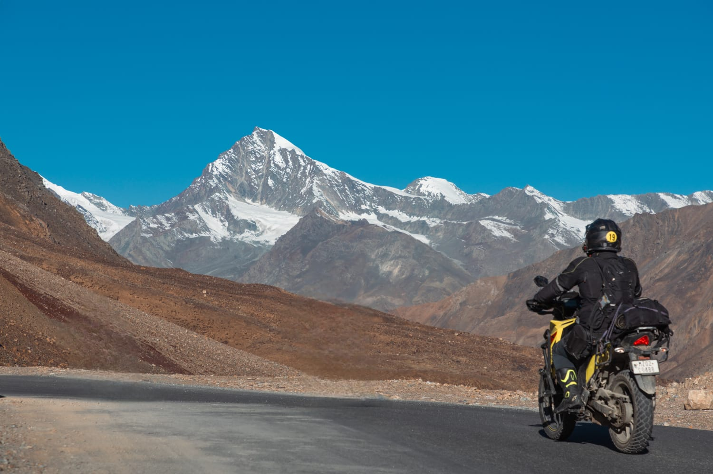

My name is Rempuia Chinzah.
I am a Adventure motorcycle rider, photographer and content creator from Lunglei, Mizoram, India.
I love Adventure motorcycle Riding, photography, filmmaking and travelling. One of my biggest adventures was riding to Ladakh on my motorcycle, and also my ride with my infibikescars crew mates to Phawngpui, also known as the Blue Mountain, is the highest peak in Mizoram at 2,157 meters (7,077 feet). Located in the Lawngtlai district near the Myanmar border
📷 Instagram
In Sept 26 to 30 Sept 2025, I rode my Suzuki V-Strom SX 250 from Delhi to Ladakh, crossing some of the highest mountain roads in the world.
The journey tested my endurance with freezing temperatures, challenging roads, and high altitude, where I experienced altitude sickness and nearly lost my life.
It remains one of the most memorable adventures of my life.
Read the full story published by The Aizawl Post:
📰 Read the article
🎥 Watch my Phawngpui adventure on YouTube:
Featured Story
My Motorcycle Journey to Ladakh

Photographer • Adventure Motorcycle Rider • Content Creator